Tawaramoto, Nara: things to do, food and stays
Tawaramoto · Nara
Tawaramoto
Highlighted on the Nara map.
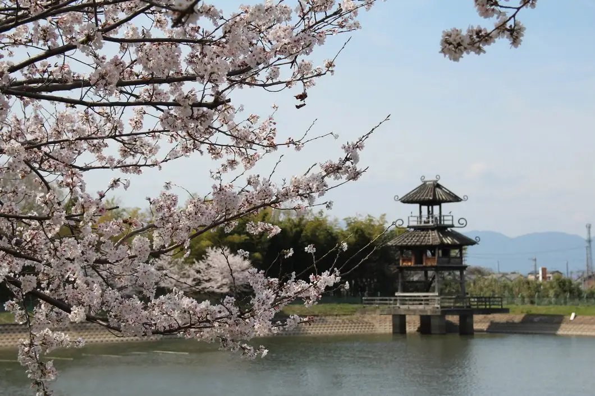
Stay
蘊 奈良 マルト醤油（旧：NIPPONIA 田原本 マルト醤油）
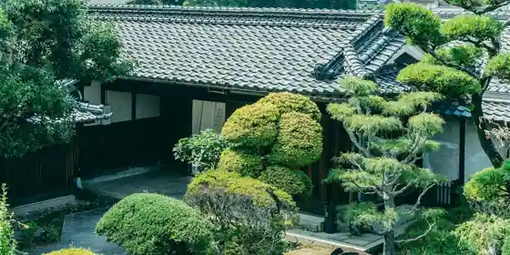
Un Nara Maruto Shoyu (Kyu : NIPPONIA Tawaramoto Maruto Shoyu)
ＮＩＰＰＯＮＩＡ 田原本 マルト醤油
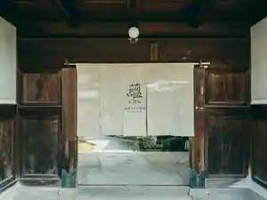
NIPPONIA Tawaramoto Maruto Shoyu
Dining
暁 製麺
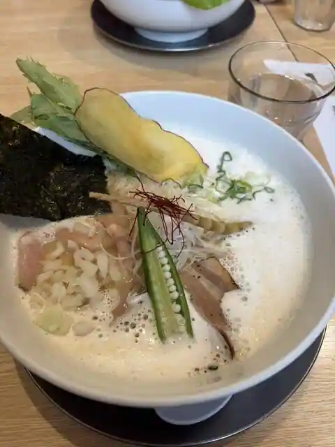
Akatsuki Seimen
長秀屋
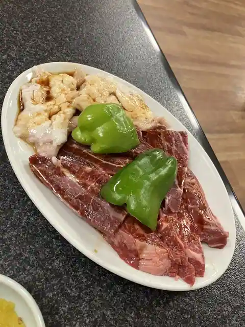
Choju Ya
ハナヤマZ
Hanayama Z
MARUTO 1689
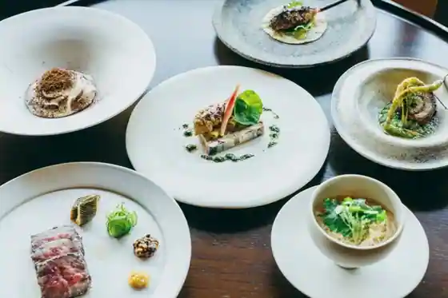
MARUTO 1689
麺や 鳥の鶏次 NARA24号店
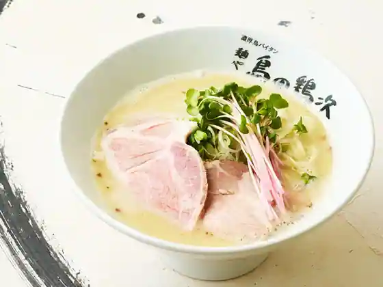
Men Ya Tori No Niwatori Tsugi NARA24 Go
からこカフェ
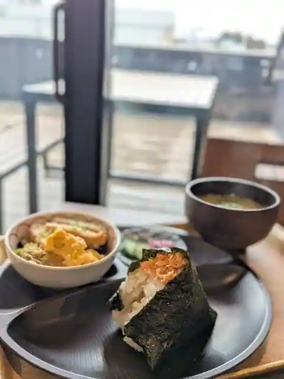
Karako Cafe
天龍
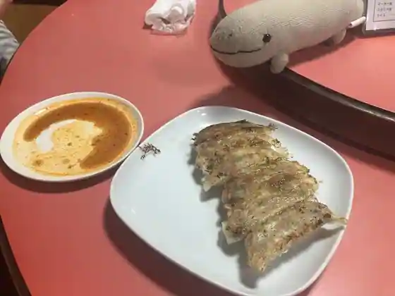
Tenryu
肉匠迎賓館 田原本店
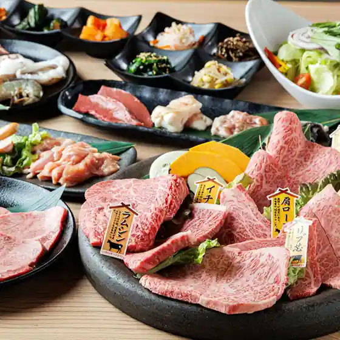
Niku Takumi Geihinkan Tawaramoto
グリル佐々木
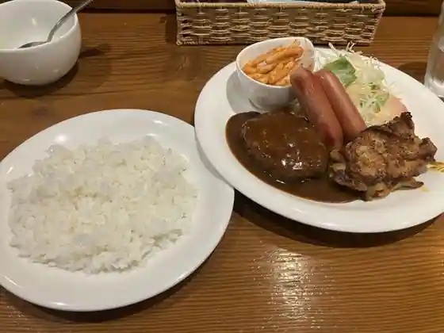
Grill Sasaki
道の駅 レスティ 唐古・鍵
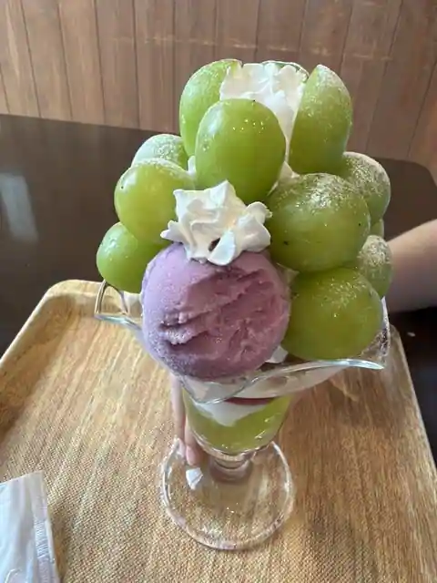
Michi No Eki Resutei Karako Kagi
カギ ベーカリー
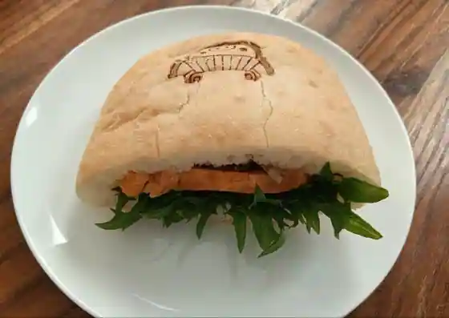
Kagi Bakery
デアイ・ザ・ベーカリー 奈良店
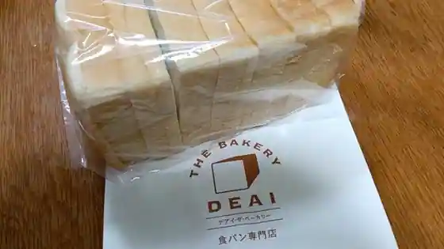
Te Ai Sa He Kari Nara
芯
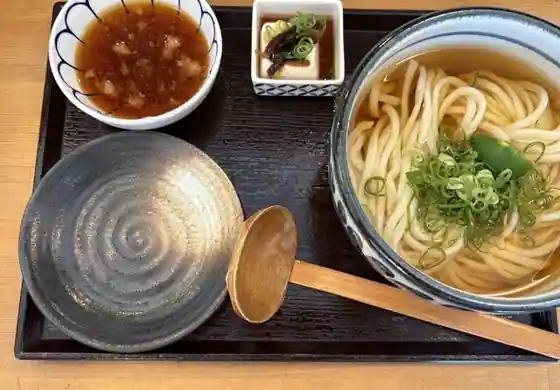
Shin
和風居酒屋鞍馬
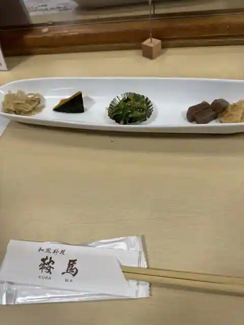
Wafu Izakaya Kurama
蘊 奈良 マルト醤油
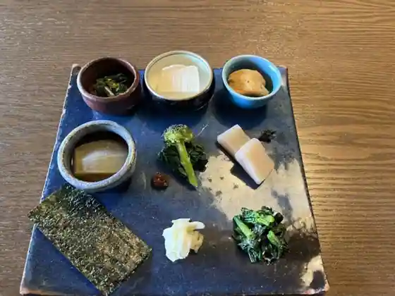
Un Nara Maruto Shoyu
屋台ラーメン走麺屋
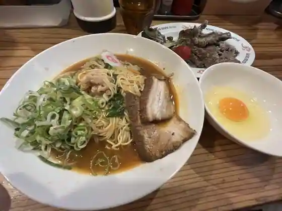
Yatai Ramen So Men Ya
麺処 ちゅるちゅる
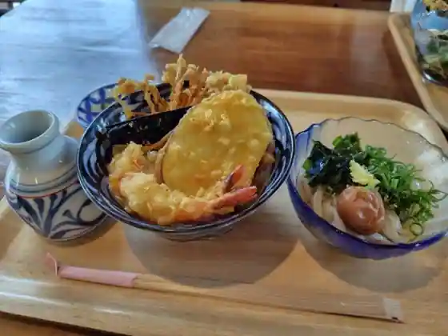
Men Tokoro Churuchuru
桜昇園
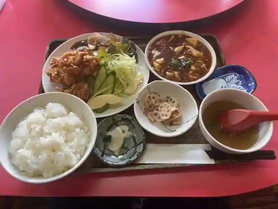
Sakura Noboru Sono
焼肉 556
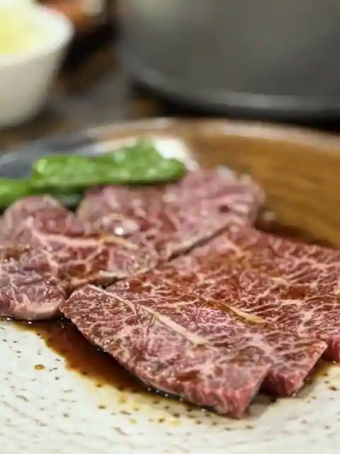
Yakiniku 556
彩華ラーメン 田原本店
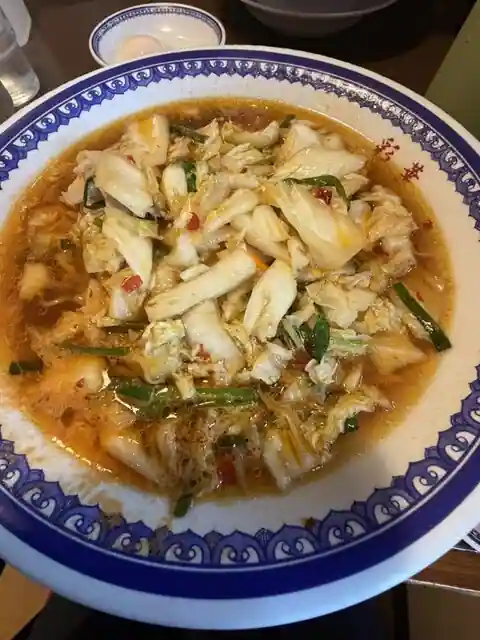
Ayaka Ramen Tawaramoto
地鶏炭焼き麺処 おしどり五代目鶴松
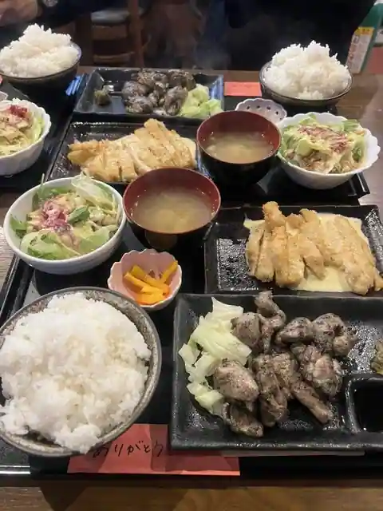
Jidori Sumiyaki Ki Men Tokoro Oshidori Godai Me Tsurumatsu
鶏自慢くっく
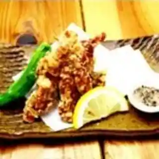
Niwatori Jiman Kukku
葡萄屋
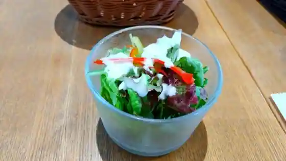
Budo Ya
横浜家系ラーメン 天川家
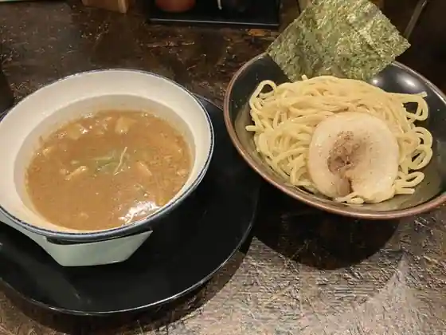
Yokohama Kakei Ramen Amakawa Ie
Sights
Karako Kagi Iseki
Karako · Kagi Kokogaku Museum
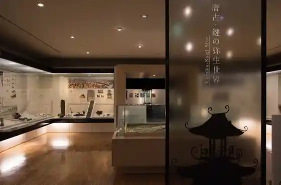
Ta Za Ya Kokorozashi Ri Miyako Hiko Shrine (Tsusho Ta Shrine)
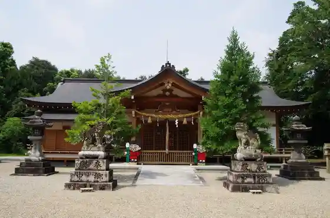
Mura Ya Shrine (Tawaramoto)
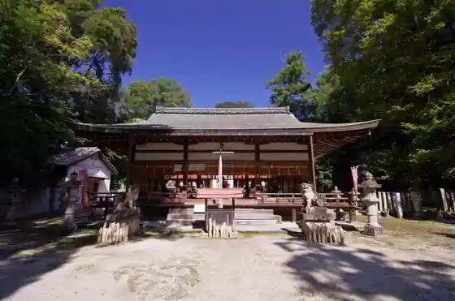
Tanabe
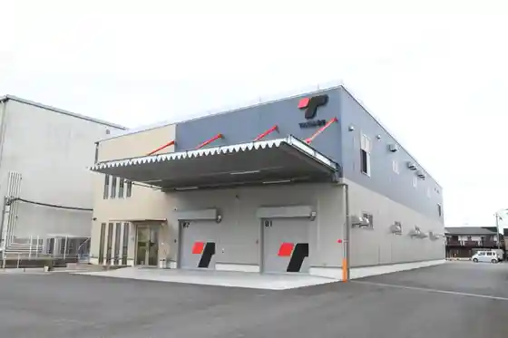
Ike Shrine (Tawaramoto Ho Takashi Tera)
Tsushima Shrine (Tawaramoto)
Kagamizukuri Shrine (Tawaramoto)